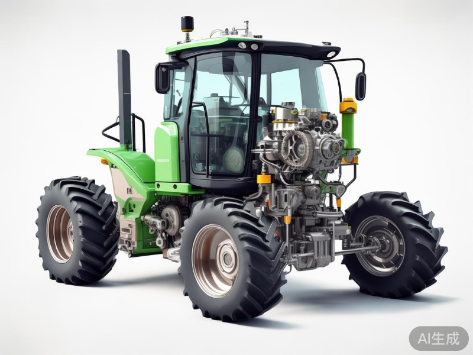

农机数字孪生总览
实时监控所有农机设备运行状态与作业数据
2023年11月15日
14:30:45
总农机数量
24
3台 (本月新增)
运行中农机
18
2台 (较昨日)
预警农机
5
1台 (较昨日)
+2
今日作业面积
248亩
12.5% (较昨日)
农机数字孪生模型

正常运行中
1
发动机区域
温度: 85°C
转速: 2200 RPM
2
液压系统
压力: 280 bar
温度: 62°C
3
传动系统
温度: 98°C
振动: 0.18g
当前速度
8.5 km/h
正常
发动机温度
85°C
正常
油耗
2.3 L/h
正常
作业深度
15 cm
偏高
实时数据监测
发动机转速
2200 RPM
0
1500
3000
发动机温度
85°C
0°C
60°C
120°C
液压系统压力
280 bar
0
150
350
实时油耗
2.3 L/h
0
2.5
5
电池电压
13.8 V
10V
12V
15V
作业速度
8.5 km/h
0
7.5
15
作业数据分析
预警信息
5条未处理农机设备列表
| 农机编号 | 类型 | 状态 | 当前位置 | 作业进度 | 最近维护 | 操作 |
|---|---|---|---|---|---|---|
|
农机A-001
2023-05-12 购入
|
拖拉机 | 运行中 |
东北区域
经度: 116.40°E
纬度: 39.90°N
|
75%
|
2023-11-02
常规保养
|
|
|
农机B-002
2023-03-25 购入
|
收割机 | 预警中 |
南部区域
经度: 113.27°E
纬度: 23.13°N
|
45%
|
2023-10-28
液压系统维修
|
|

农机C-001
2023-01-18 购入
|
播种机 | 已停止 |
西部区域
经度: 110.25°E
纬度: 34.27°N
|
100%
|
2023-10-15
更换零件
|
|
|
农机D-002
2022-11-05 购入
|
灌溉机 | 预警中 |
南部区域
经度: 113.31°E
纬度: 23.08°N
|
30%
|
2023-10-20
常规保养
|
|

农机A-002
2023-06-30 购入
|
拖拉机 | 维护中 |
维修车间
经度: --
纬度: --
|
0%
|
维护中
发动机维修
|
|
显示
1 到
5 条，共
24 条